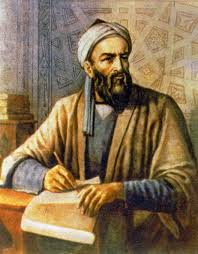
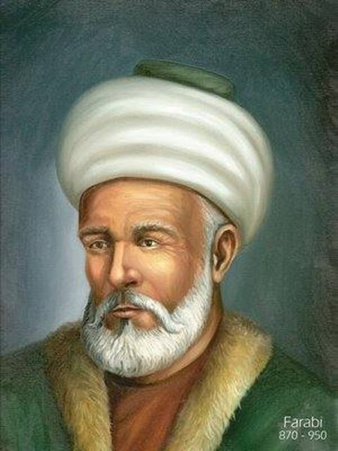
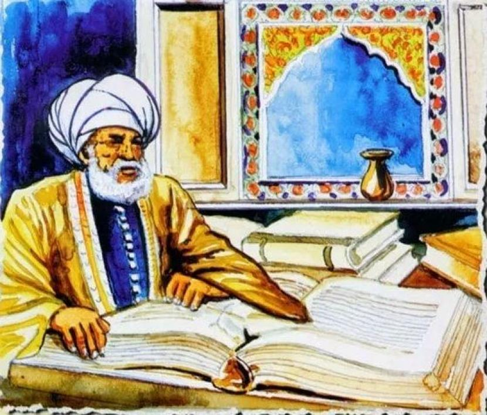
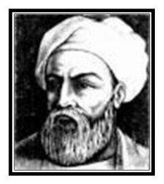

Pada website ini akan membahas secara singkat tentang para ahli hadits,semoga bermanfaat dan menambah pengetahuan
ya..

IMAM BUKHORI
Kisah singkat Imam Bukhori
Nama lengkap beliau adalah Muhammad bin Ismail bin Ibrahim bin Al Mughiroh bin Bardizbah Al jufi.
Lahir di negeri bukhara(uzbekistan),jumat 13 syawal 194 H.
Ayah beliau adalah salah seorang ulama hadits yang sangat terkenal dan ibu beliau merupakan orang yang taat
ibadah
Ketika usianya 16 tahun beliau sudah menghafal buku-buku Imam Abdullah bin mubarok dan Waki bin jarrah.
Beliau pernah mengatakan:"Aku menghafal 100,000 hadits shahih dan 200,000 hadits tak shahih."
Salah satu kitab yang di susun oleh Imam Bukhari yaitu at tarikh al kabir,
yang beliau susun di samping makam Rasulullah saat imam bukhori menenunaikan haji dan menetap di makkah.
kadand-kadang belai ke madinah.Selain makkah dan madinah beliau juga mengadakan rihlah untuk menuntut ilmu,
diantaranya syam,mesir,kufah,basrah,dan baghdad.
selain hafalannya pada hadits Iman Bukhari juga mahir pada ilmi fikih,ilmu al jarh wa at tadil,ilmu illal.
ilmu illal yaitu cabang ilmu hadits yang menjelaskan cacat dan kelemahan yang terdapat dalam sebuah hadits.
Beliau wafat pada malam sabtu setelah sholat isya tepatnya saat malam idul fitri 256 H,pada usia 62 tahun.

IMAM MUSLIM
kisah singkat Imam Muslim
Nama lengkap beliau adalah Imam Muslim bin al-Hajjaj bin Muslim bin Warad bin Kausyaz Abu Al-husain
Al-qusyairi An Naisaburi.
Lahir pada tahun 206 H dan wafat pada tahun 261 H karena sakit pada usia 55 tahun.Beliau hidup pada masa
daulah abasiyah yang berpusat di kota baghdad.
Beliau hidup pada masa abasiyah II yaitu khalifah mutawakkil(232-334H/847-946M).
Pada masa itu,keadaan politik dan militer sedang mengalami kemorosotan,namun dalam bidang pengettahuan
mengalami kemajuan yang signifikan.
Imam Muslim mulai belajar hadits sejak tahun 218 H,yang usianya berkisar 12 atau 14 tahun.
Beliau melakukan safar dalam mencari ilmu kebeberapa wilayah yaitu irak,hijaz,syam,mesir.
Imam Muslim termasuk di antara ulama yang menghidupi dirinya dengan berdagang,beliau adalah seorang pedagang
pakaian yang sukses.
Imam Muslim memulai menulis karya shahihnya pada tahun 235 H pada umur 29 tahun,dan menyelesaikan kitab
shahih muslimnya pada tahun 250H.
Membutuhkan waktu 15 tahun untuk menyelesaikannya,pada usia 44 tahun.

IMAM TIRMIDZI
kisah singkat Imam Tirmidzi
Nama lengkap beliau adalah Muhammad bin Isa bin Saurah bin Musa as-Sulami at-Tirmidzi.
lahir pada tahun 209 H di sebuah daerah bernama Tirmidz.Dan nama belaiu dinisbatkan kepada sebuah sungai
yang ada di daerah tersebut yaitu jaihun.
Beliau mengalami kebutaan pada masa tua beliau,yaitu pada masa setelah beliau melakukan banyak perjalanan
menuntut ilmu.
beliau belajar hadits sejak usia muda,beliau melakukan rihlah kebebarapa negara yaitu
khurasan,iraq,madinah,makkah.
Ahli hadits yang merupakan guru beliau yaitu Imam Bukhari dan Imam musli,serta ad bebrapa imam lain.
Buku karya imam Tirmidzi al-jami,al-illal,al-illal al-kabir,dll.

IMAM IBNU MAJAH
kisah singkat Imam Ibnu majah
Nama lengkap beliau adalah Abu Abdillah Muhammad Ibn Yazid Ibnu Majah al-Rabi al-Qazwini.
Lahir di qazwen nma salah satu kota iraq pada tahun 209 H(824 M) dan wafat tanggal 22 Ramadhan 273H.
Sejak umur 15 tahun,ibnu majah sudah merantau ke berbagai negara untuk mencari ilmu dan mempelajari hadits
dengan gurunya.
gurunya bernama Ali bin Ibn muhammad at-tanafsi sampai beliau umur 20 tahun.Beliau juga melakukan safar ke
negara iraq,
hijaz,mesir,syam,kufah,bashrah.
Jumlah hadits yang di tulis oleh beliau sebanyak 4341 hadits yang terbagi menjadi 37 kitab dan 1502 bab.
hadis beliau terdiri dari 428 hadits shahih,19 hadits hasan,613 hadits dhaif,dan 99 hadits yang sangat
lemah.
karena hadits ibnu majah terlalu banyak yang dhoif maka hadits yang sering di gunakan yaitu hadits imam
bukhari,muslim.